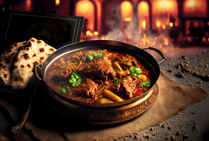
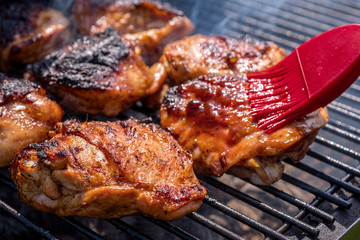

Food sections
Welcome to the continental food section of my webpage.
-
- Karahi:
2200 PKR 2000 PKR

- Dish karahi (known as gosht karahi when prepared with goat or lamb meat instead of chicken), or kadai
chicken, is a chicken dish from South Asia.
- Chicken Karahi
- Mutton Karahi
- Beef karahi
-
- Biryani: 500 PKR

- A dish of meat, fish, or vegetables cooked with rice flavored especially with saffron or turmeric.
- Chicken Biryani
- Mutton Biryani
- Beef Biryani
-
- BBQ pieces: 800 PKR

- Pieces of beef, chicken, fish, or the like, roasted over an open hearth, esp. when basted in a barbecue
sauce.
- BBQ Chicken pieces
- BBQ Beef pieces
- BBQ Fish pieces
Go Back